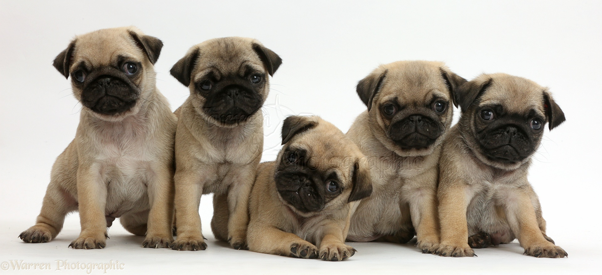
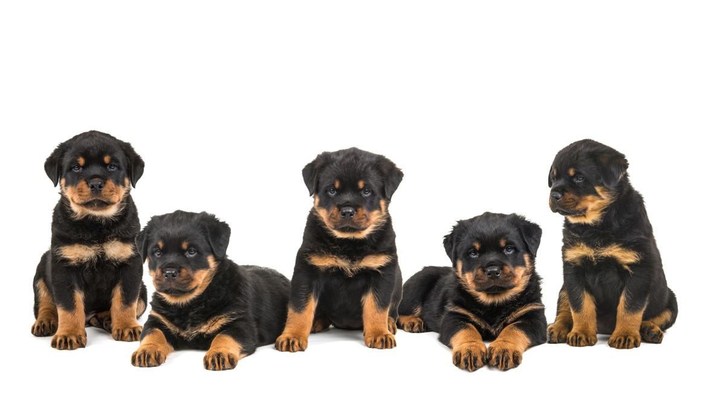
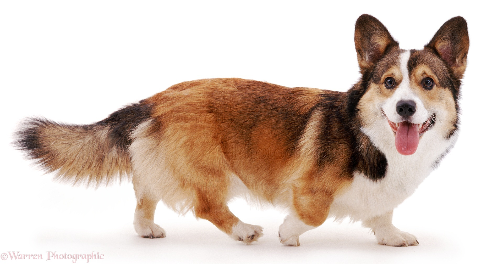
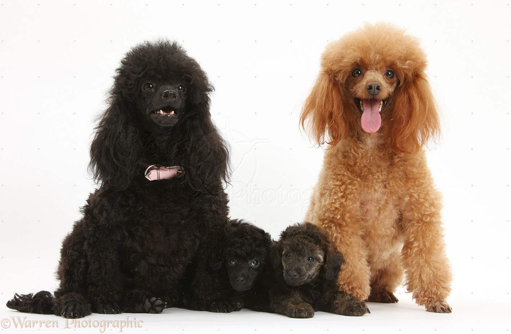
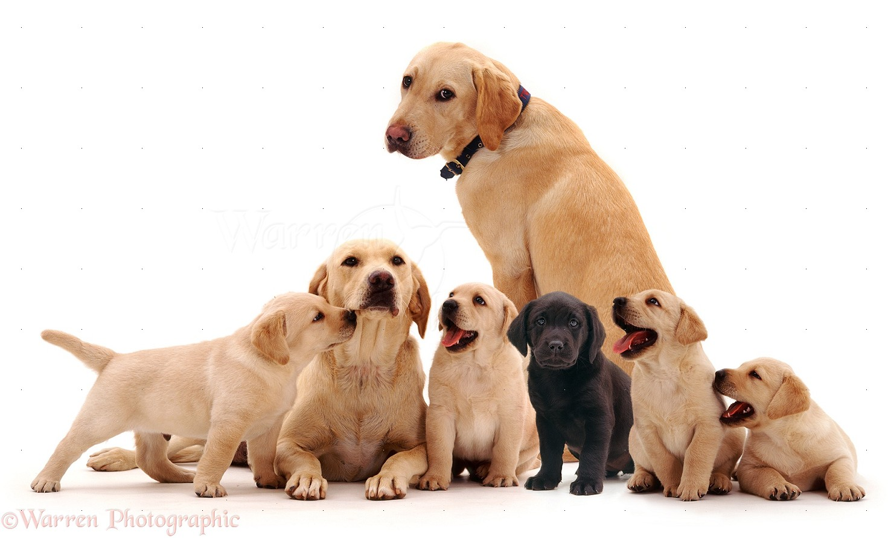

Find yourself a lifelong companion
Golden Retriever
One of the top 5 smartest dogs in the world, golden retrievers are wonderful family pets because they are so easy to train and can learn an awful lot of commands and tricks!
Pug
Pugs are incredibly social and warm creatures, as well as being good for first time dog owners because they are relatively lower maintenance. These dogs only require short walks instead of the long runs other dogs need and prefer cooler temperatures.

Rottweiler
These dogs are incredibly protective of their families and can make great guard dogs. We recommend them for familiies with prior experience training/owning a dog, obedience training is NOT optional!

Corgi
Corgis are playful, friendly, stubborn and above all incredibly loving! They are the 11th smartest dog breed and quickly/easily pick up tricks that they are taught!

Poodle
Poodles are one of the quietest and most peaceful dog breeds there are, they are great with kids and tend to be very non-aggressive. They're also very lively dogs and love constant exercise!

Labrador
Labradors also tend to be very nonagressive and calm around other animals and humans. They are one of the best dogs for children of all ages, and tend to be a bit more conservative with their affection than the golden retriever.
